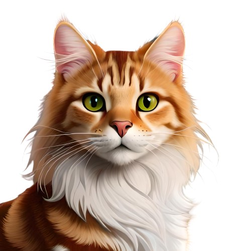

💠Devíamos ser ensinados a não esperar por inspiração para começar algo. Ação sempre gera inspiração. Inspiração raramente gera ação.
💠Não importa que você vá devagar, contanto que você não pare.

💠Comece onde você está, use o que você tem e faça o que você pode.
💠Tudo o que um sonho precisa para ser realizado é alguém que acredite que ele possa ser realizado.
💠Devíamos ser ensinados a não esperar por inspiração para começar algo. Ação sempre gera inspiração. Inspiração raramente gera ação.
💠Não importa que você vá devagar, contanto que você não pare.
💠A felicidade não é algo pronto. Ela é feita das suas próprias ações.
💠A vida é 10% o que acontece a você e 90% como você reage a isso.
💠Um livro, uma caneta, uma criança e um professor podem mudar o mundo.
💠O otimismo é a fé daquele que conduz à realização; nada pode ser feito sem esperança.
💠A inspiração existe, porém temos que encontrá-la trabalhando.
💠Coragem é saber o que não temer.
💠Não é a carga que o derruba, mas a maneira como você a carrega.
💠Não existe nada de completamente errado no mundo, mesmo um relógio parado, consegue estar certo duas vezes por dia.